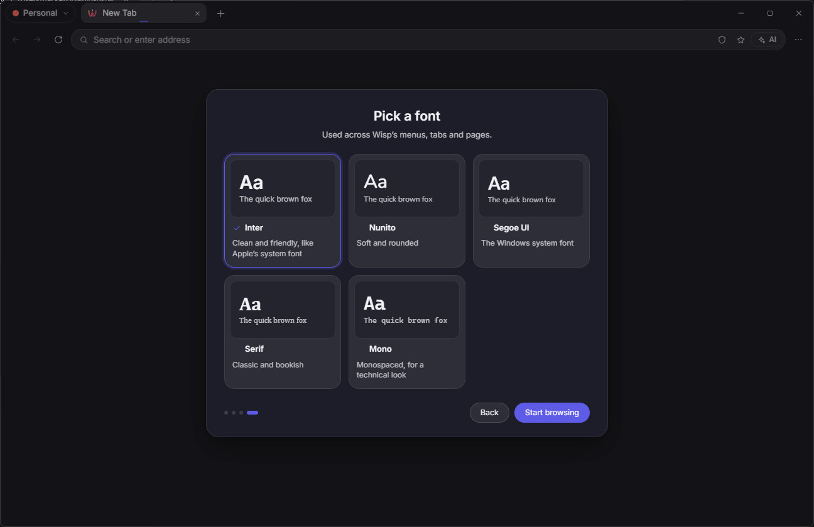
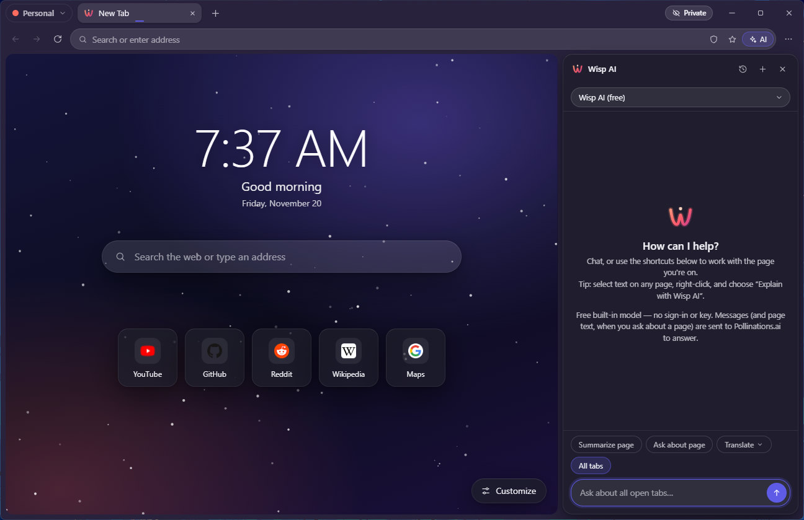
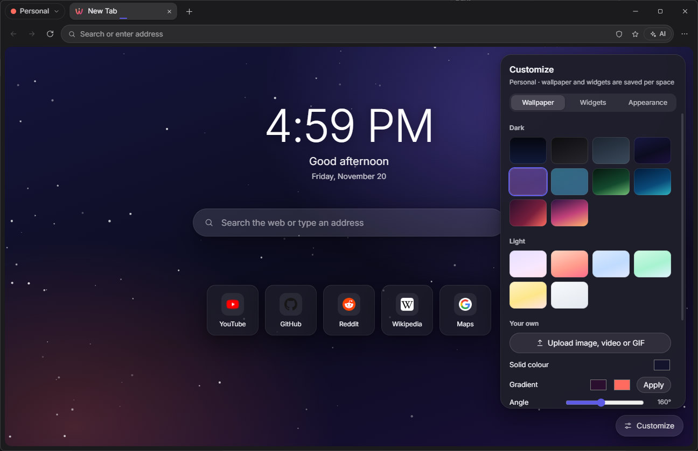
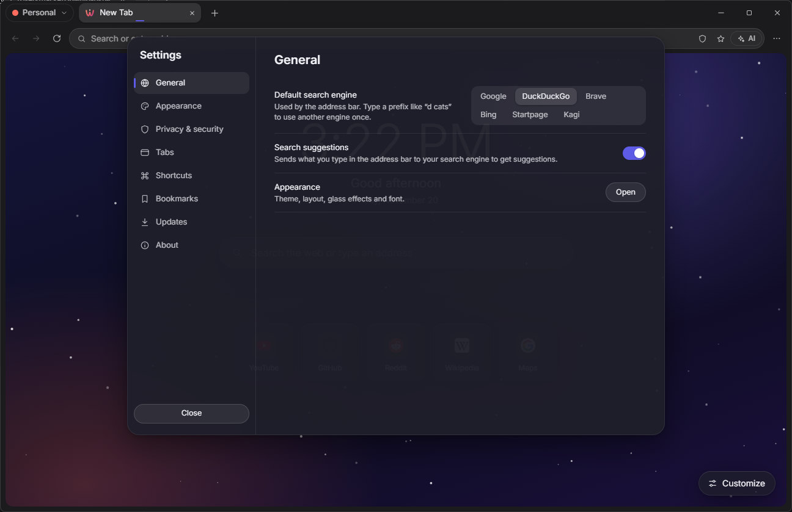
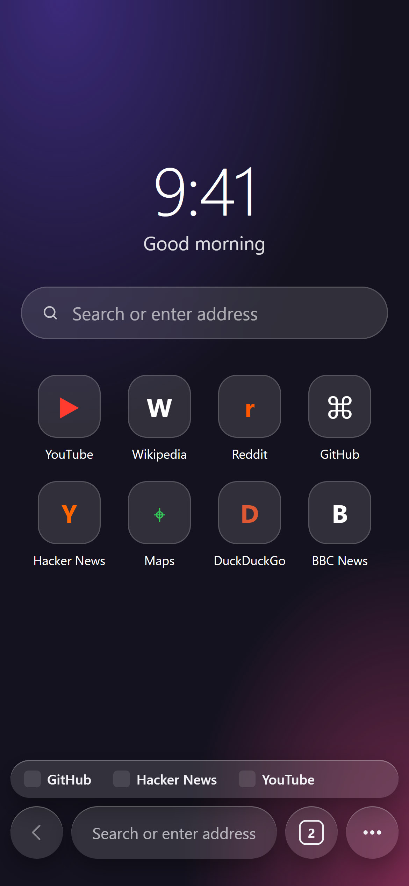

Everything you need. Nothing you don't.
Wisp runs on the web engine already in your system, so the app itself stays tiny and fast.
Light and quick
A 2 MB installer. Memory saver unloads tabs you aren't using, so 15 open tabs use about 150–250 MB in total.
Private by default
A built-in ad and tracker blocker, HTTPS-only mode, private windows, and no analytics or telemetry. Ever.
Free AI, built in
Summarize a page, ask about it, translate, or explain selected text. Works out of the box with no account, or bring your own model.
Three layouts
Classic tabs on top, a Compact single row, or a collapsible Vertical sidebar. Switch any time.
Spaces and split screen
Keep work and life apart in colour-coded Spaces, each with its own tabs and cookies. View up to four pages side by side.
Bookmarks bar
Your favourite sites one click away. Right-click to edit or remove, and import bookmarks from other browsers.
Frosted glass, your way.
A first-run setup walks you through it, and everything can be changed later in Settings.
- Glass or Flat. Real Windows 11 Mica behind see-through surfaces, or solid and simple.
- Fonts and colours. Inter, Nunito, Segoe UI, serif or mono, any accent colour, light or dark.
- Wallpapers. Gradients, your own photos, even videos and GIFs on the New Tab page.

Ask the page.
Open the AI panel with Ctrl + Shift + Space. It knows what you're reading.
- Summarize long articles or ask questions about the page you're on.
- Select any text, right-click, and choose Explain or Translate.
- Free model included. Or use your own key for Google Gemini, Groq or OpenRouter, or a local Ollama model.

Built in Rust. Measured, not guessed.
Take a look around.



Liquid Glass, in your pocket.
A native app, written in Rust, with Apple's Liquid Glass on iOS 26. Glass buttons, a menu that morphs out of the button, a bookmarks bar, and a content blocker.
- Download the .ipa
- Install it with Sideloadly on Windows or Mac, signing in with your Apple ID.
- On the iPhone, turn on Settings → Privacy & Security → Developer Mode, then trust your Apple ID in Settings → General → VPN & Device Management.
Wisp isn't on the App Store yet. With a free Apple ID, sideloaded apps need refreshing every 7 days. Full steps
Questions, answered.
Is Wisp free?
Yes. Wisp is free and open source under the MIT licence. There are no ads, accounts or paid tiers.
What engine does it use?
On Windows, Microsoft's WebView2, the same Chromium engine as Edge, so sites work like they do in Chrome. On iPhone, Apple's WebKit, which iOS requires of every browser. Using the system's engine is why Wisp is so small.
Windows says "Windows protected your PC". Is it safe?
That warning appears for new apps that aren't code-signed yet. Click More info → Run anyway. Every release is built in public by GitHub Actions from the source code, with SHA-256 checksums published next to the downloads.
Do I need anything else installed?
Windows 11 already has everything. Windows 10 may need Microsoft's free WebView2 Runtime, which most PCs already have.
Does Wisp collect my data?
No. Your history, bookmarks and settings stay on your device. See the privacy policy for exactly which services Wisp talks to, and when.
How do updates work?
Wisp checks GitHub for new versions and installs them when you restart. You can turn this off, or join the Beta channel, in Settings → Updates.
Mac or Linux?
Not yet. Windows and iPhone/iPad come first.
Give Wisp a try.
It takes a few seconds to install and you can import your bookmarks from any browser.